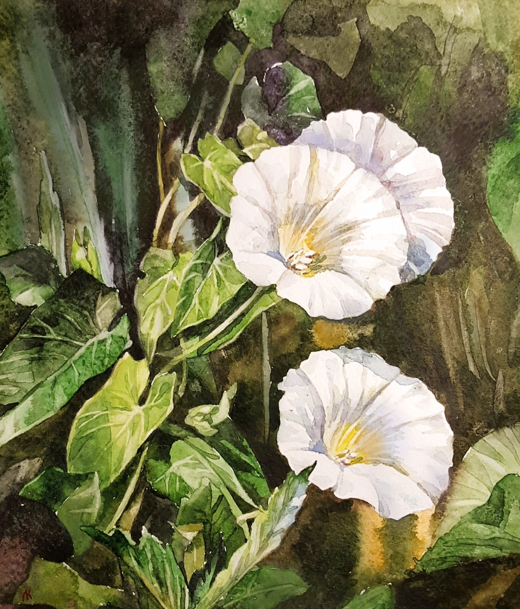
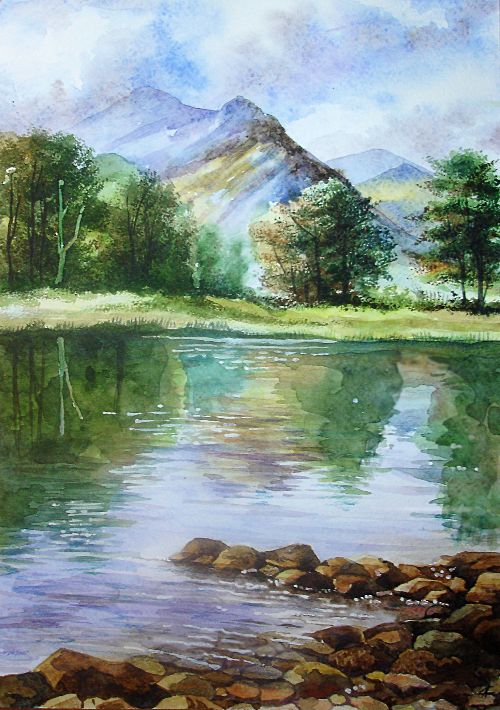
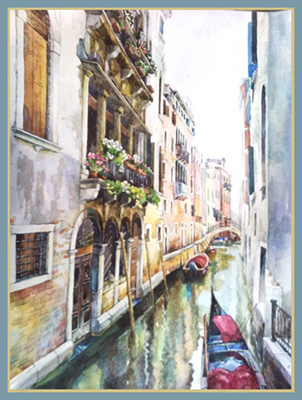
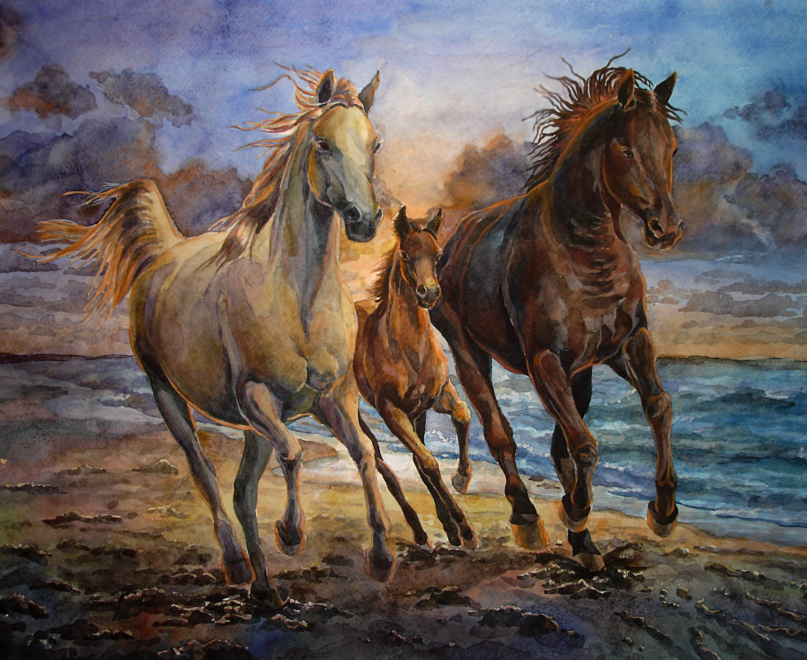
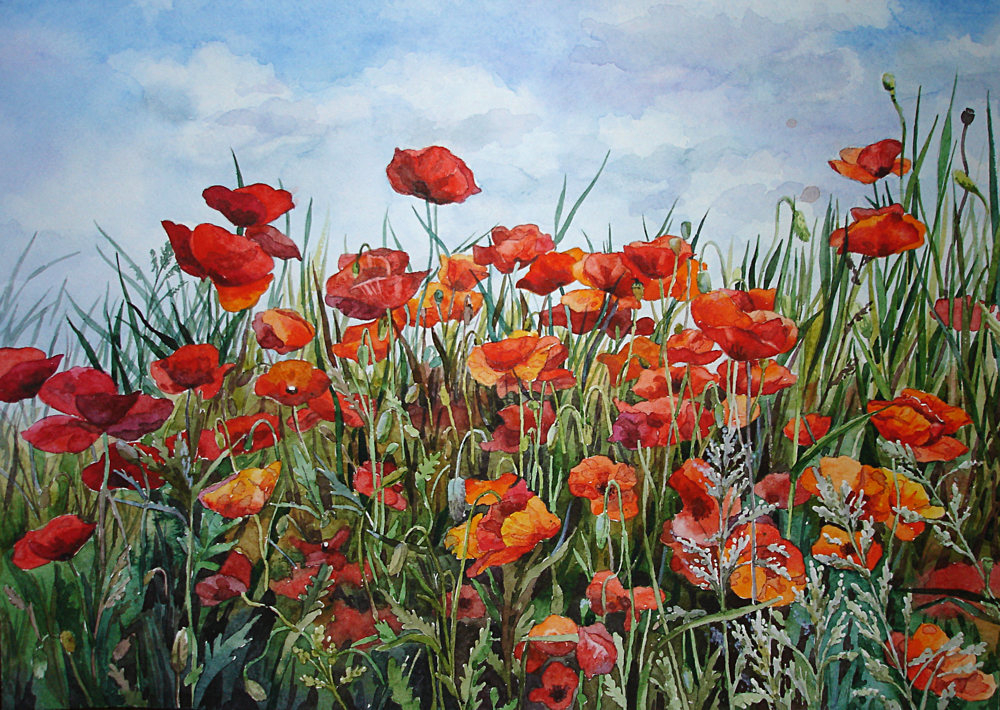
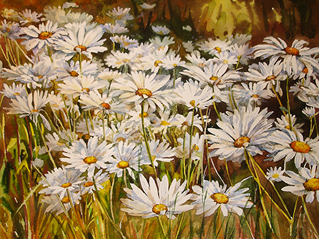
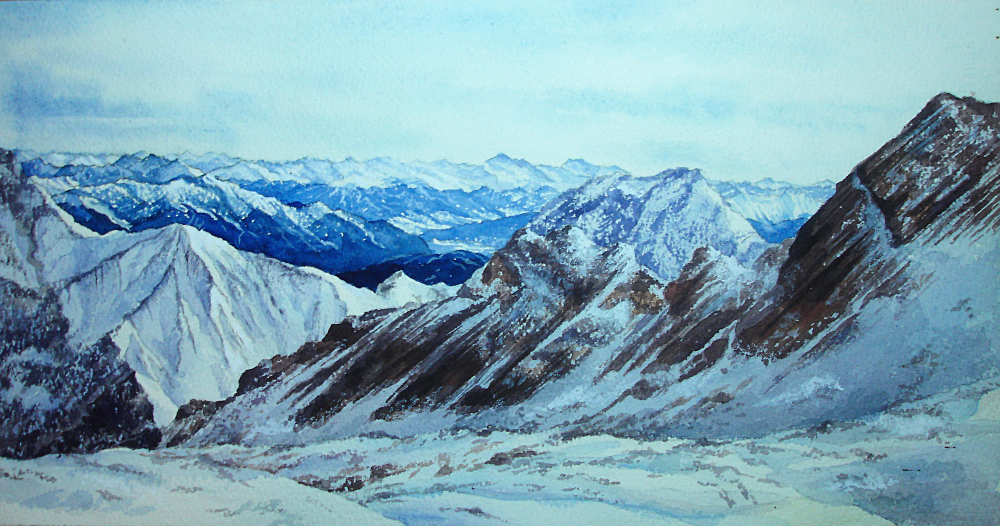

Живопис · Акварель
Мистецтво,
що дихає
кольором
Роботи в техніці акварелі, що передають настрій, світло і тишу кожної миті.

Роботи
Галерея мистецтва







Про мене
Кожна робота —
Кожна робота —
це розмова
зі світлом
Напишіть тут кілька слів про себе, свій творчий шлях та натхнення. Розкажіть, де ви навчалися, які техніки любите і що вас надихає.
Акварель для мене — це не лише техніка, а спосіб мислення. Вода і пігмент живуть своїм життям, і моя роль — лише направляти цей діалог.
10+
Років творчості
80+
Завершених робіт
12
Виставок
Нотатки
Думки та натхнення
Зв'язок
Давайте поговоримо
Зацікавлені у придбанні роботи, спільному проекті або просто хочете написати — буду рада почути.
your@email.com